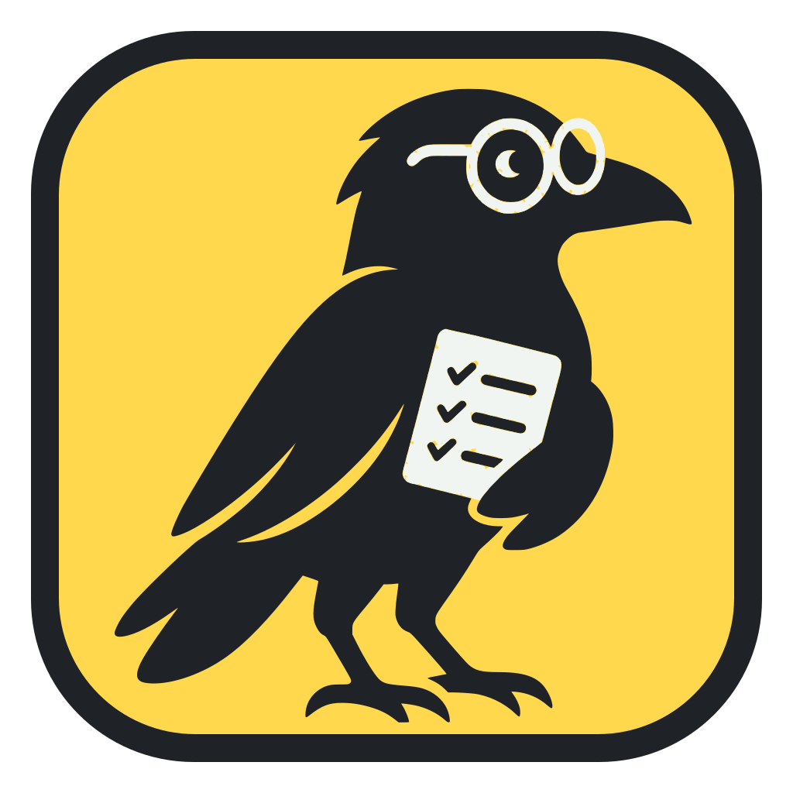

story-gateEvery story starts on spec, is tested against spec, and ends on spec.
A quality gate for AI coding work. Agents gather the evidence, an independent judge scores it, fixed rules decide, and a human accepts.
by 

story-gateA quality gate for AI coding work. Agents gather the evidence, an independent judge scores it, fixed rules decide, and a human accepts.